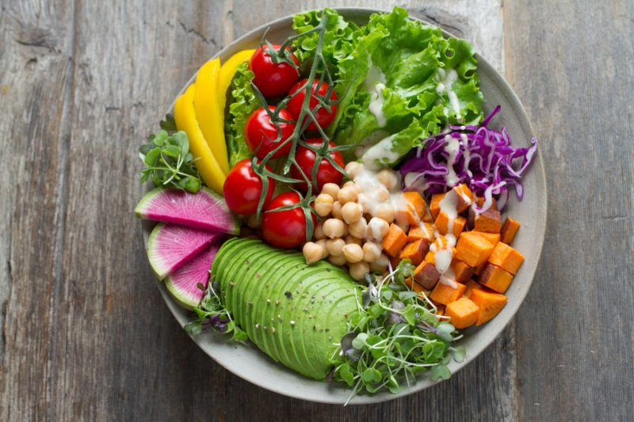

Vegan diet (VD) promotes weight loss hence reduces risks of chronic health conditions like diabetes. VD involves abstaining from meat and animal products. Read more
The concept of pre-cision nutrition in personalized nutrition helps people to be mindful of their behavior, environment, and lifestyle. It plays a crucial role in meeting nutritional needs of individuals with chronic diseases or physiological statuses.Read more
Probiotics are nonpathogenic organisms that exert positive impact on the hosts' health. Suppplementing our food with live microorganisms enhances the microbial balance of the intestinal tract. Read more
